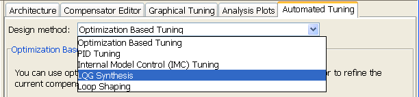
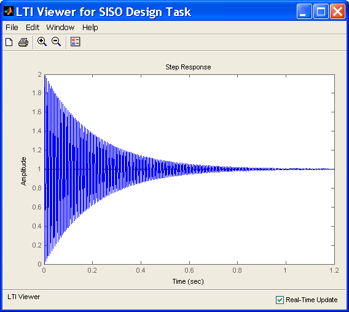
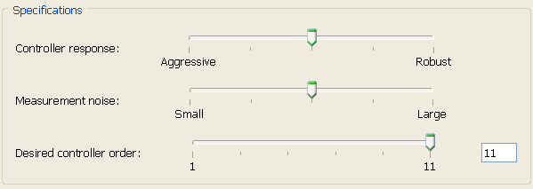
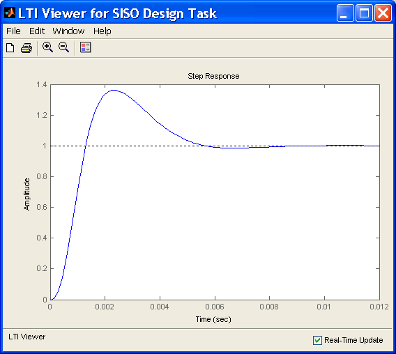
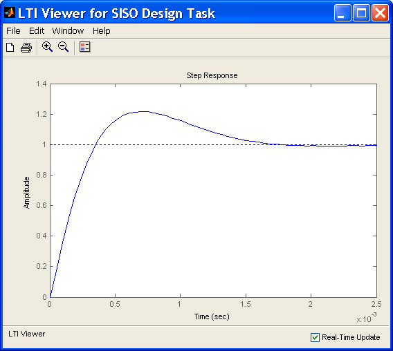
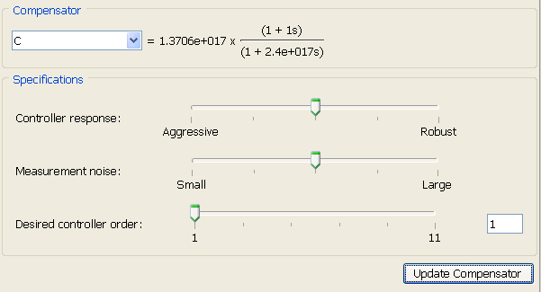
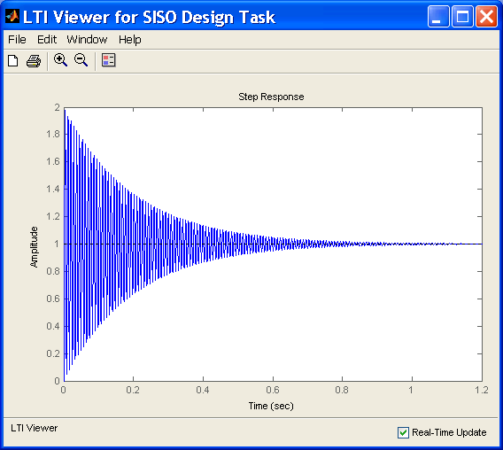
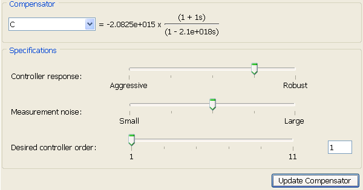
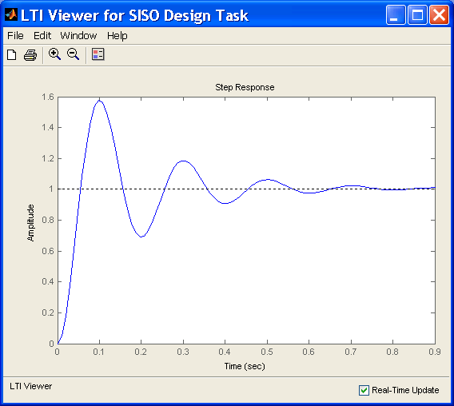

SISO 設計ツール内の自動 LQG トラッカー デザイン
このデモでは、ハード ディスクの読み書きヘッドの位置のフィードバック コントローラーを設計するために、SISOTOOL の LQG 統合メソッドを使用する方法を示します。
システムとモデルの詳細は、Franklin、Powell、Workman による『Digital Control of Dynamic Systems』の第 14 章を参照してください。
目次
ディスク ドライブ モデル
モデル化するシステムの図を以下に示します。

モデルの入力は、ボイス コイル モーターを駆動する電流 ic、出力は、位置誤差信号 (PES、トラック幅の比 (%)) です。10 次モデルの詳細は、「ハード ディスク ドライブのデジタル サーボ制御」を参照してください。モデルにはわずかな遅延がありますが、現時点では SISOTOOL は遅延のあるモデルをサポートしていないため、入力からは遅延を削除してフィードバック コントローラーを設計してあります。
load diskdemo Gr = tf(1e6,[1 12.5 0]); Gf1 = tf(w1*[a1 b1*w1],[1 2*z1*w1 w1^2]); % first resonance Gf2 = tf(w2*[a2 b2*w2],[1 2*z2*w2 w2^2]); % second resonance Gf3 = tf(w3*[a3 b3*w3],[1 2*z3*w3 w3^2]); % third resonance Gf4 = tf(w4*[a4 b4*w4],[1 2*z4*w4 w4^2]); % fourth resonance G = (ss(Gf1) + Gf2 + Gf3 + Gf4) * Gr; % convert to state space for accuracy
設計の概要
読み書きヘッドが適切な位置にあるフルオーダー LQG トラッカーの大まかな設計をします。また、LQG トラッカーを調整して、特定の性能要件を達成し、可能な限りコントローラーの次数を低減します。たとえば、LQG トラッカーを PI コントローラー形式に調整します。
SISOTOOL 設計作業の作成
MATLAB® プロンプトで以下のコマンドを入力して SISOTOOL を開きます。
sisotool(G)
[SISO 設計作業] が Control and Estimation Tools Manager に追加されます。グラフィカルな調整ツールがある [SISO 設計ツール] ダイアログが表示されます。SISOTOOL で [解析プロット] タブに移動し、閉ループ システムのステップ応答を選択してプロットします。SISO 設計ツールの使用方法の詳細は、「SISO 設計ツールの Getting Started」を参照してください。
ツリー内でSISO 設計作業ノードを選択し、[自動調整] タブを選択します。[設計手法] の一覧には、4 つの補償器設計手法があります。この例では、LQG 合成設計手法を使用します。

フルオーダー LQG トラッカーの設計
手順 1 [設計手法] の一覧で [LQG 合成] を選択します。
[補償器] の領域で、初期コントローラーは 1 に設定されています。この設定では、大きな振幅のある安定した閉ループ システムが得られます。閉ループのステップ応答プロットを参照してください。

手順 2 LQG 設計仕様を指定します。
[仕様] の領域でスライダーを使用して、コントローラーの性能に関する要件を数値で設定します。
1. コントローラーの応答:スライダーを左側 ([アグレッシブ]) にドラッグすると、閉ループ応答でオーバーシュートと整定時間を減少する、よりアグレッシブなコントローラーとなります。ただし、モデルの精度が不足している場合、アグレッシブなコントローラーは、安定余裕 (ロバスト性) を減少します。
2. 測定ノイズ: スライダーを左側 ([小規模]) にドラッグすると、ユーザーが測定ノイズは小さいと見なしていることを示します。したがって、コントローラーは、Kalman フィルターによって推定された状態量において、より信頼性を増し、よりアグレッシブに応答します。ただし、測定のノイズが大きい場合は、スライダーを右側にドラッグすると、コントローラーは変化により遅く反応するようになります。
3. 希望する LQG コントローラー次数:スライダーをドラッグして、希望する LQG トラッカーの次数を設定します。LQG トラッカーには、積分器が自動的に含まれます。閉ループが安定性を失い始めるまで、コントローラーの次元を下げてください。
設計内の最初の反復としては、既定のスライダー設定を使用します。

手順 3 [補償器の更新] ボタンをクリックします。
新しい補償器が [補償器] 領域に表示され、ステップ応答プロットが更新されます。

手順 4 LQG トラッカーの閉ループの性能を調整します。
さらにアグレッシブなコントローラーを設計するには、[コントローラーの応答] スライダーを左端に移動します。これによって、オーバーシュートが 50%、整定時間が 70% 減少します。

低次元化された LQG トラッカーの設計
[希望する LQG コントローラー次数] を 1 に設定し、[補償器の更新] ボタンをクリックします。新しい補償器は、基本的に0.57(1+s)/s の PI コントローラーです。このコントローラーによって、大きく振動する閉ループ システムが作成されます。


コントローラーのアグレッシブの度合いを低減するには、[コントローラーの応答] スライダーを右方向に移動します。新しい補償器は、基本的に0.001(1+s)/s の PI コントローラーです。


応答プロットには、PI コントローラーの設計によって、最適化ベースの設計を開始するための適切な設計が用意されたことが示されています。詳細は、「SISO 設計ツールの Getting Started」を参照してください。